本教程现在是多余的。您应该改用卡通着色器。
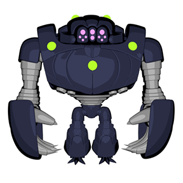
本教程介绍如何使用 Arnold 创建“样式化”卡通着色效果。我们将 facing_ratio 着色器与其他各种工具*和颜色*着色器结合使用以精细调整效果。
要下载本教程中使用的着色器，请单击此处。
要下载对应的 Maya 场景文件，请单击此处。
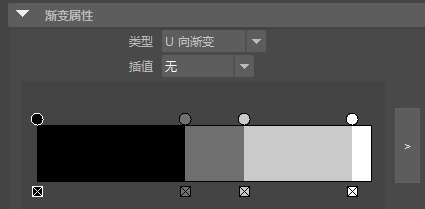
在本例中，使用了一个 standard_surface 着色器。或者，也可以使用工具*着色器并将 *shade_mode 设置为“平面”(Flat)。
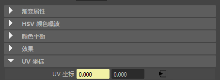
渐变的输出值连接到渐变的 U 坐标
使用工具着色器（shade_mode 设置为 nodoteye）连接到渐变，也可以创造出相似的正面比效果。您也可以尝试使用该着色器的一些颜色模式来生成不同的卡通着色效果。请注意，ndoteye 着色不会出现在镜面反射中。
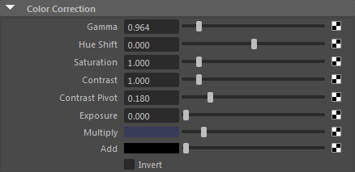
蓝色添加到 color_correct 着色器的 multiply
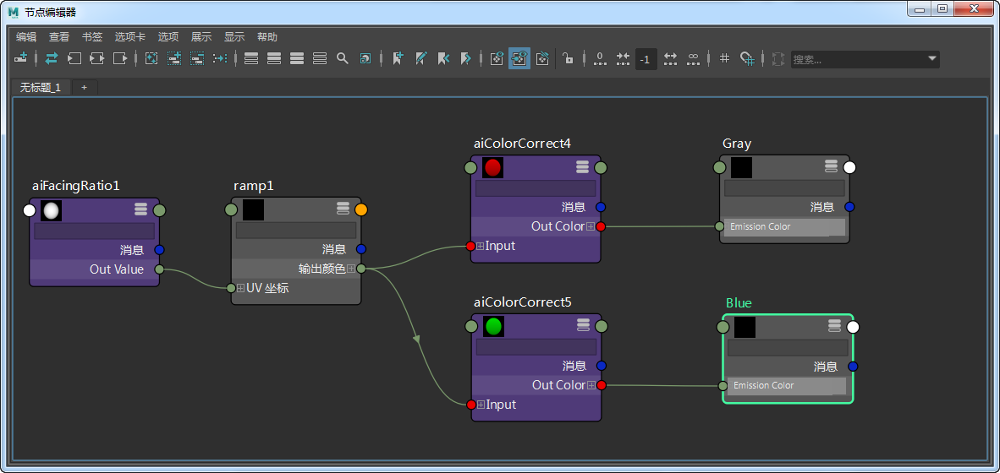
多个着色器连接到同一个渐变和 facing_ratio 着色器
可以使用 facing_ratio 着色器对卡通着色效果的外观添加更多控制。下面是调整“偏差”(Bias)和“增益”(Gain)属性时的结果。
| 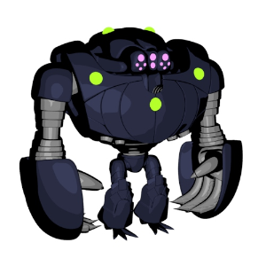 | 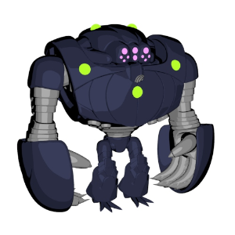 | 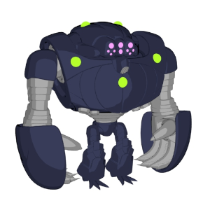 |
| 0.25 | 0.5 | 0.75 |
| 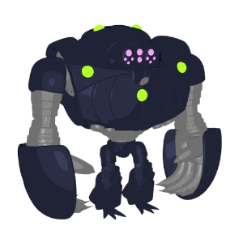 | ||
| 0.1 | 0.5（默认值） | 0.9 |
也可以使用*范围*着色器通过重映射渐变的输入值来精细调整卡通着色效果。
| 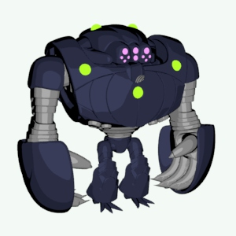 | 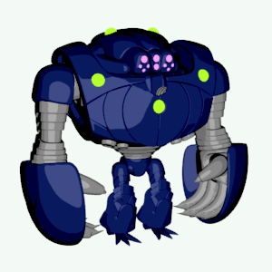 |
| 未使用范围_着色器 -> _emission_color | 使用_范围_着色器 |
此卡通着色教程到此结束。您可以尝试使用 Autodesk 的 Hyperspace Madness 制作免费提供的一些模型实践这些着色技术。
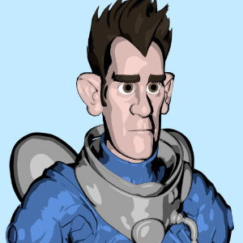
曲面亮度 您可以使用此节点基于环境中的任何灯光来更改着色。在下面的示例中，使用了曲面亮度着色器来驱动一个渐变的 V 坐标，该渐变连接到一个 standard_surface 着色器的 *base_color*。
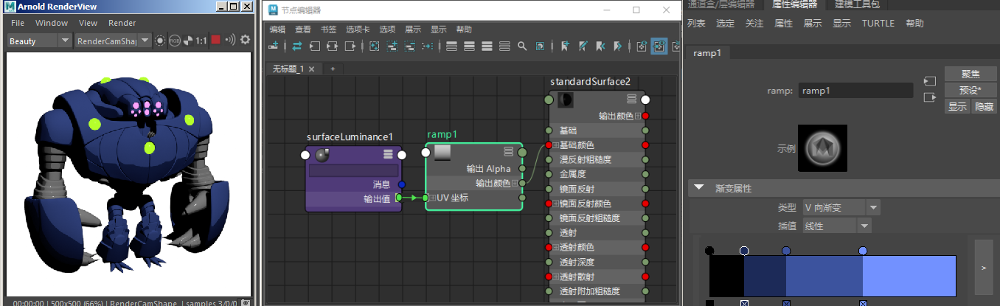
曲面亮度_着色器 -> _渐变的 vcoord_